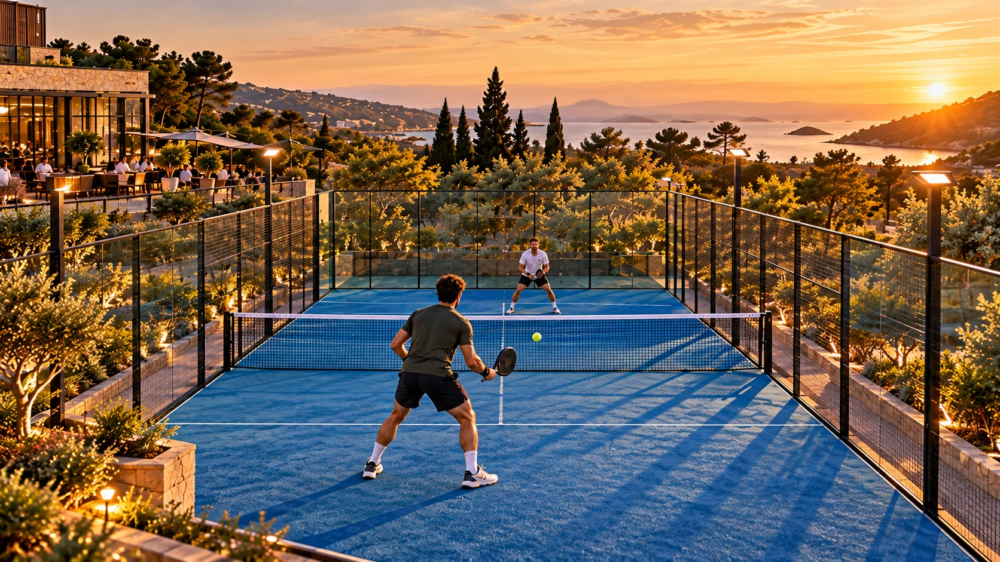

F16 · 고급 · FPV
가로·세로 동시 납품 설계
주요 행동과 주변 맥락을 나누어 두 화면비에서 반드시 남아야 할 요소를 결정한다.
그림에서 확인할 세 가지촬영 전에 가로·세로의 공통 행동 영역을 정한다
1가로 원화의 공간
한 장의 넓은 사진에서 코트와 양옆 환경을 함께 본다. 주변 정보는 선수들이 어디서 경기하는지 설명하는 역할을 맡는다.
2중앙의 핵심 행동
가운데 선수의 전신·라켓·공이 서로 어떤 관계에 있는지 본다. 얼굴의 위치보다 경기 동작이 온전히 읽히는지가 중심 구도의 기준이다.
3좁아질 때 잃는 것
양옆을 덜 보게 된다고 상상하며 라켓 끝과 상대 선수, 코트 정보 중 무엇이 빠질지 살핀다. 사진 자체는 여러 크롭 결과가 아닌 단일 원화다.
촬영 설계
촬영을 이렇게 설계한다
남길 행동을 고른다
학습 장면에서는 선수 전신·라켓·공 가운데 무엇이 반드시 보여야 하는지 먼저 정한다. 선수 얼굴만 가운데 둔다고 충분하지 않으며 라켓의 움직임과 공의 위치가 읽힐 여유를 함께 검토한다.
주변 정보의 역할을 나눈다
가로 화면의 양옆 환경은 경기장 규모를 설명할 수 있다. 세로 결과에서는 그 정보가 줄어들 수 있으므로 핵심 행동과 장소 설명을 같은 프레임에 모두 요구할지 우선순위를 정한다.
동작 전체로 비교한다
한 정지 프레임에서 잘 들어가도 라켓을 휘두를 때는 잘릴 수 있다. 적용할 때는 동작의 시작·정점·끝을 두 화면비로 확인하고 촬영 거리나 중심 위치를 바꾸어 누락을 줄인다.
Pure Padel 촬영 설명은 같은 비행에서 가로와 세로 영상을 함께 확보하는 제작 방식을 소개한다.
원본 영상Pure Padel Lightwater
1. 동작의 최대 범위
라켓과 팔이 가장 넓게 펼쳐질 때 화면에 남는 범위를 본다. 얼굴만 중심에 맞춘 구도가 실제 스포츠 행동까지 보존하는지 판단한다.
2. 선수와 장소의 비중
선수의 행동과 코트의 규모 중 어느 정보가 강조되는지 비교한다. 두 화면비에서 같은 비중을 유지해야 한다는 가정은 피한다.
3. 납품 방식의 확인
제작 설명의 동시 확보와 일반적인 후반 크롭을 구별한다. 실제 카메라 구성은 공개되지 않았으므로 결과의 구도 조건을 중심으로 살핀다.
재생이 제한되면 원본 영상 새 창을 이용하세요.
제작진 설명 · 한국어 요약 번역
한 번의 비행에서 두 화면 형식을 확보하다
제작 목표
번역 요약: Whyld는 Pure Padel Lightwater를 가로와 세로 형식으로 동시에 촬영하도록 처음부터 설계했다고 설명한다.
같은 비행에서 와이드 영상과 소셜용 세로 영상을 함께 얻는 것이 목표였다.
경로 계획
Moonshot의 지구력과 작은 크기로 여섯 코트와 클럽하우스를 끊김 없이 지났다.
카메라 높이, 피사체 위치, 전환과 공개 순간을 두 화면비에 맞춰 계획했다.
효율과 한계
별도 반복 비행이 줄어 제작이 효율적이었다고 밝힌다.
공개 본문은 구체적인 동시 촬영 장비 배치나 후반 처리를 밝히지 않는다.
Kling 프롬프트단문 인과 체인 · 16:9
내가 직접 만들어 본다
핵심 동작(전신·라켓·공)을 중앙 띠에 모으고 장소 정보는 양옆에 맡겨, 양옆을 덜어내도 동작이 남게 한다.
- S01영상은 하나의 연속 쇼트다.
- S02실내 패들 코트에서 선수가 공을 친다.
- S03처음 10초 동안, 드론은 선수 전신을 화면 중앙에 세운다.
- S04라켓과 공도 같은 중앙 세로 띠 안에 놓인다.
- S05중앙에 모였기 때문에 양옆은 비워 둘 수 있다.
- S06코트 벽과 상대 선수는 양옆에서 장소를 설명한다.
- S07다음 10초 동안, 선수가 라켓을 크게 휘두른다.
- S08라켓이 넓게 움직이자 드론은 조금 뒤로 물러난다.
- S09드론이 물러나서 라켓 끝이 중앙 띠 안에 남는다.
- S10마지막 10초 동안, 공이 날아가도 드론은 공과 선수를 함께 담는다.
- S11그 결과 양옆을 덜어내도 핵심 동작은 온전하다.
- S12드론은 스윙이 끝난 자세에서 멈춘다.
[네거티브]
- 컷이나 다른 구도로 바뀌어 쇼트가 끊기는 것 금지
- 코트가 실외나 다른 경기장으로 바뀌는 것 금지
- 선수의 전신이 잘리거나 얼굴만 가운데 오는 것 금지
- 라켓과 공이 중앙 띠 밖으로 벗어나 있는 것 금지
- 양옆 정보가 핵심 동작을 가려 산만해지는 것 금지
- 벽과 상대 선수가 없어 장소를 알 수 없는 것 금지
- 선수가 제자리에서 라켓을 작게만 흔드는 것 금지
- 드론이 물러나지 않아 라켓 끝이 잘리는 것 금지
- 물러나다 선수가 너무 작아져 동작이 안 읽히는 것 금지
- 공이 화면 밖으로 사라지고 선수만 남는 것 금지
- 양옆을 덜어내면 라켓이나 공이 함께 잘리는 것 금지
- 드론이 스윙 도중 급히 멈추며 흔들리는 것 금지
결과에서 볼 것
- 전신·라켓·공이 중앙에 함께 모였는가
- 라켓을 휘두를 때 라켓 끝이 잘리지 않았는가
- 양옆 정보가 장소만 설명하는 역할이었는가